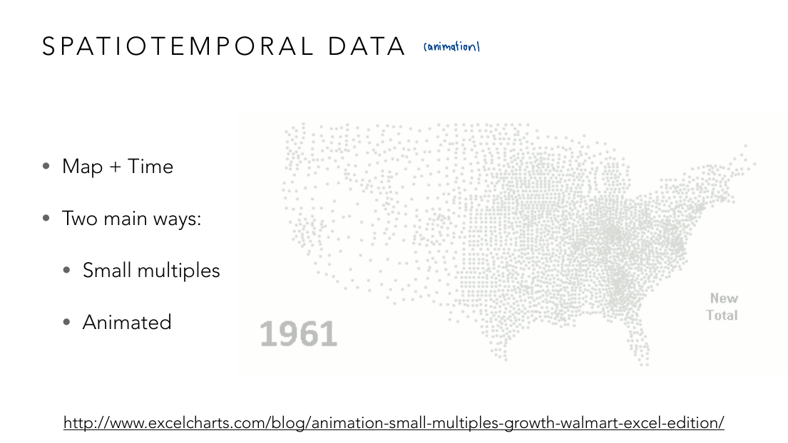
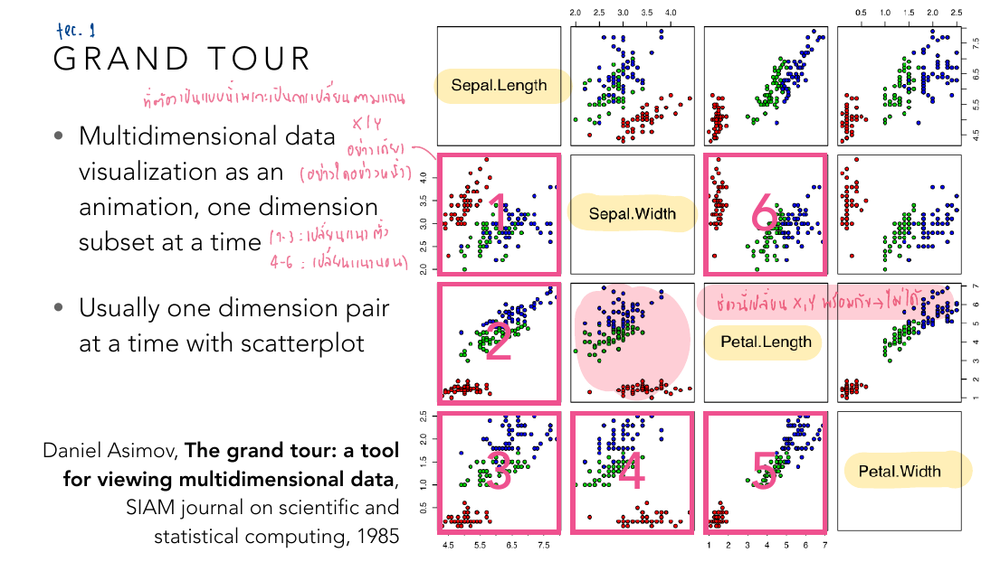
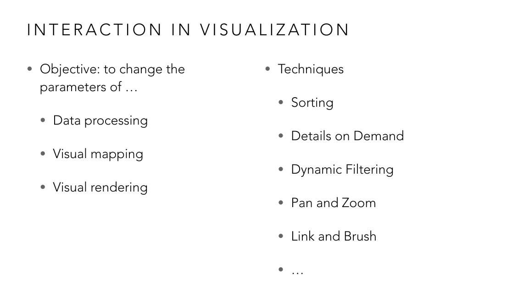
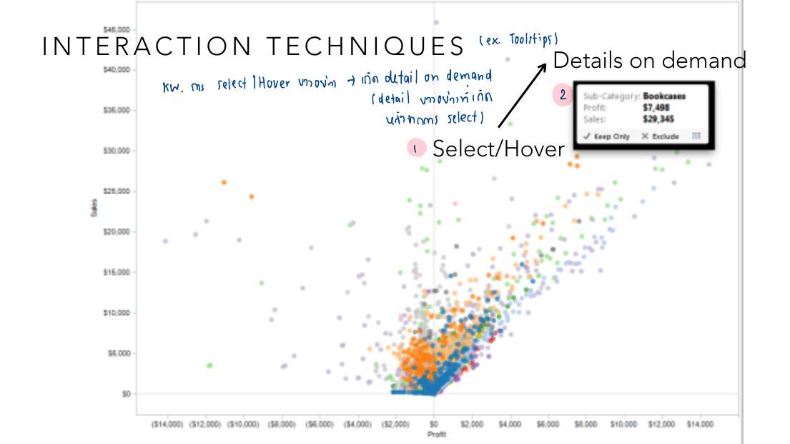
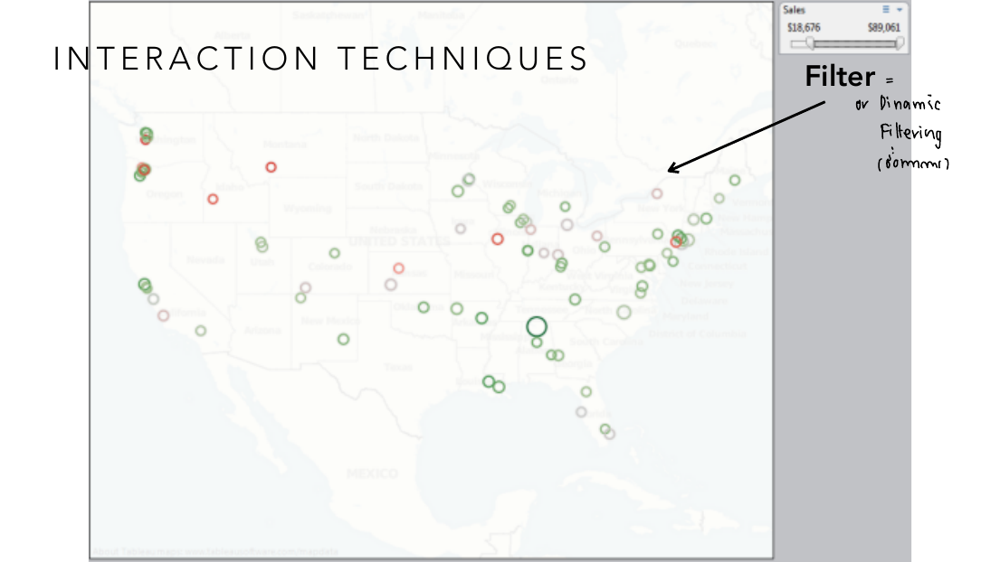
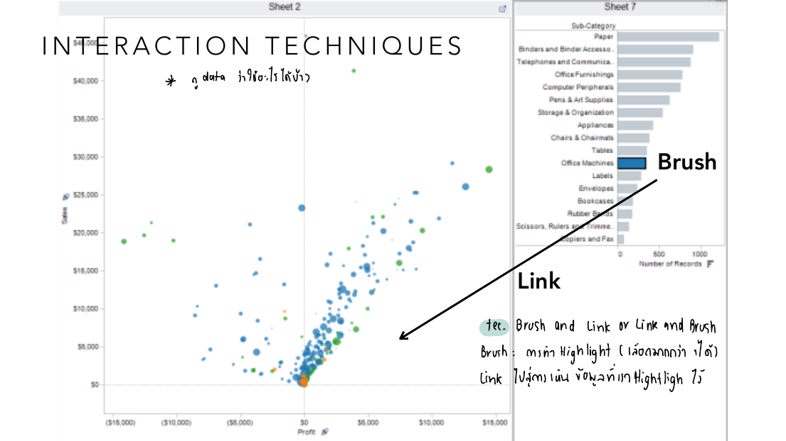
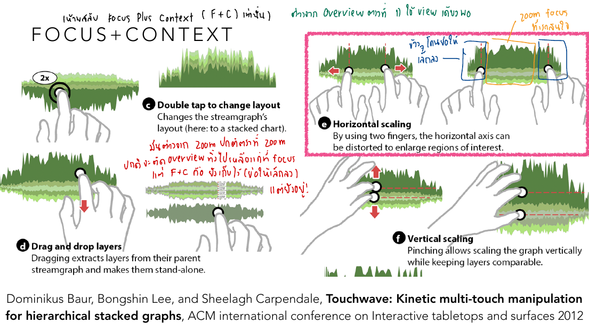
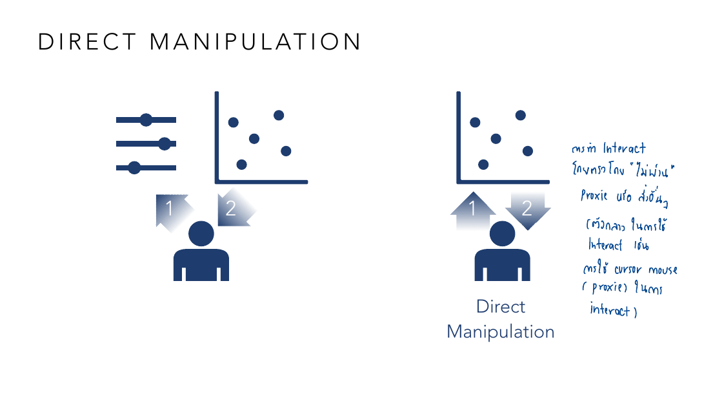

vis-9-interactive.pdf
บทนี้เริ่มด้วยการต่อเรื่อง Flow Map จาก Lesson 8 อีกนิด (edge bundling ช่วยลดเส้นทับกันในแผนที่/กราฟหนาแน่น) แล้วเปิดประเด็นใหม่ที่ยึดเป็นแกนของทั้งบท: Space-Time Tradeoff — ยิ่งประหยัดพื้นที่จอ ยิ่งต้องแลกด้วยเวลาที่ผู้ใช้ต้องเสียไปโต้ตอบ/รอดู แนวคิดนี้อธิบายได้ทั้ง animation vs small multiples, dashboard, และปิดท้ายด้วยเทคนิค interaction ทีละแบบพร้อมภาพหน้าจอ Tableau จริง.
เมื่อข้อมูลมีทั้งพิกัด (space) และเวลา (time) พร้อมกัน มี 2 วิธีหลักในการแสดง:

ภาพตัวอย่างนี้มาจากกราฟ animated ยอดสาขา Walmart ที่ขยายตัวทั่วสหรัฐฯ ทีละปี (เริ่มจากปี 1961 ที่มีจุดน้อยมาก) — ถ้าทำเป็น small multiples ต้องพิมพ์แผนที่ปีละภาพวางเรียงกันหลายสิบภาพ (เห็นทุกปีพร้อมกัน แต่กินพื้นที่มหาศาล) ถ้าทำเป็น animation ใช้พื้นที่แค่ภาพเดียว แต่ผู้ดูต้องนั่งดูจนจบถึงจะเห็นภาพรวมทั้งหมด (พลาดปีไหนไปก็ต้องย้อนดูใหม่) — สังเกตว่าทั้งสองวิธีให้ข้อมูลเหมือนกันทุกประการ ต่างกันแค่ "จะให้คนดูแลกอะไรกับอะไร": พื้นที่จอ (small multiples แพงกว่า) กับเวลาที่ต้องเสีย (animation แพงกว่า).
แนวคิดเดียวกับหัวข้อ 1 ขยายไปใช้อธิบายได้อีกหลายเรื่องตลอดบทนี้ — เช่น Dashboard ที่ยัดชาร์ตหลายตัวในจอเดียว (ประหยัด space แต่ผู้อ่านต้องใช้เวลากวาดตาหาข้อมูลที่ต้องการเอง) หรือ Grand Tour ที่แปลง SPLOM ทั้งตาราง (กินพื้นที่มาก) ให้กลายเป็น animation ทีละคู่มิติ (กินพื้นที่น้อยลงมาก แต่ต้องรอดูจนครบ) ลองสังเกตทุกครั้งที่เจอเทคนิคใหม่ในบทนี้ ให้ถามตัวเองว่า "เทคนิคนี้เลือกประหยัด space หรือ time" เป็นกรอบคิดที่ใช้แยกแยะเทคนิคต่าง ๆ ได้ทั้งบท.
นิยามที่ slide ยกมา: "A dashboard is a visual display of the most important information needed to achieve one or more objectives, consolidated and arranged on a single screen so the information can be monitored at a glance." — คำสำคัญคือ "single screen" และ "at a glance" (ไม่ต้อง scroll ไม่ต้องคิดนาน) หลักออกแบบที่ slide เน้น 2 เรื่อง: Hierarchy (ข้อมูลสำคัญที่สุดต้องเด่นที่สุด/อยู่ตำแหน่งที่สายตาเห็นก่อน) และ Layout (จัดวางชาร์ตให้เชื่อมโยงกันเป็นเรื่องเดียว ไม่ใช่แปะชาร์ตแยกกันสุ่ม ๆ).
Grand Tour คือการแปลงข้อมูลหลายมิติให้เป็น animation ที่ไล่แสดงทีละคู่มิติ (หรือ interpolate ระหว่างมุมมอง) แทนที่จะกางเป็นตารางใหญ่แบบ SPLOM (Lecture 6):

ภาพนี้ใช้ SPLOM ของชุดข้อมูล iris ตัวเดียวกับที่เรียนใน Lecture 6-7 เป๊ะ (Sepal.Length, Sepal.Width, Petal.Length, Petal.Width) — แต่แทนที่จะดูทั้ง 6 ช่องพร้อมกัน (เหมือน SPLOM ปกติ) Grand Tour จะไล่แสดงทีละช่อง: เลขกำกับ 1-6 บนแต่ละ panel คือลำดับที่ animation จะเล่นผ่าน (โน้ตกำกับว่าช่วง 1-3 คือการเปลี่ยนแกน x และ 4-6 คือเปลี่ยนแกน y) — ข้อดีคือใช้พื้นที่จอแค่ 1 scatter plot แทนที่จะเป็น n² ช่อง แต่ผู้ดูต้องรอดูจนครบทั้ง 6 ท่าถึงจะเห็นภาพรวมความสัมพันธ์ทุกคู่ — ตัวอย่างที่ชัดเจนของ Space-Time Tradeoff จากหัวข้อ 2 โดยตรง.
Interaction ทุกแบบมีเป้าหมายเดียวกัน: เปลี่ยนพารามิเตอร์ของ data processing, visual mapping หรือ visual rendering เพื่อช่วยหา insight:

รายการฝั่งขวาของภาพนี้ (Sort, Details on Demand, Dynamic Filtering, Pan and Zoom, Link and Brush) แทบจะตรงกับ "Visual Information-Seeking Mantra" ของ Ben Shneiderman คำต่อคำ (Overview first, zoom/filter, details-on-demand) — ไม่ใช่เรื่องบังเอิญ เพราะ paper ต้นฉบับเรื่อง Dynamic Queries ของ Shneiderman ถูกอ้างอิงในหน้าถัดไปของสไลด์ชุดนี้ด้วย ต่อไปนี้จะไล่ดูแต่ละเทคนิคด้วยตัวอย่างหน้าจอ Tableau จริง.

ในภาพนี้ scatter plot มีจุดหลายพันจุดปนกัน (Profit แกน x, Sales แกน y) — ถ้าใส่ตัวเลขกำกับทุกจุดพร้อมกันจะรกจนอ่านไม่ออกเลย แต่พอ hover ที่จุดเดียว (วงกลมสีชมพู "1. Select/Hover") จะเผยกล่อง tooltip บอกรายละเอียดเฉพาะจุดนั้น (Sub-Category: Bookcases, Profit: $7,498, Sales: $29,345) — โน้ตกำกับว่า "detail หายไปถ้าไม่ได้ select" คือหลักการของ details-on-demand: ซ่อนรายละเอียดไว้ก่อน โชว์เฉพาะตอนผู้ใช้ร้องขอ (ผ่านการ select/hover) แทนที่จะยัดทุกอย่างลงจอตลอดเวลา.

มุมขวาบนของภาพมี slider ช่วง Sales ($18,676 – $89,061) — เลื่อน slider แล้วจุดบนแผนที่ที่ไม่อยู่ในช่วงนั้นจะหายไปทันที (หรือจางลง) โดยไม่ต้องโหลดหน้าใหม่หรือเขียน query เอง — นี่คือ "dynamic" ของ dynamic filtering: ผลลัพธ์เปลี่ยนทันทีขณะเลื่อน ไม่ต้องกด "submit" ทำให้ผู้ใช้ทดลองเปลี่ยนช่วงไปเรื่อย ๆ จนกว่าจะเจอ pattern ที่สนใจได้เร็วกว่าการกรองแบบ static มาก.

ภาพนี้มี 2 ชาร์ตวางเคียงกัน: bar chart จำนวนสินค้าตาม sub-category (ขวา) กับ scatter plot Profit/Sales (ซ้าย) — ถ้า "brush" (ลากเลือก) แท่ง "Office Machines" ในกราฟขวา จุดในกราฟซ้ายที่เป็นสินค้าประเภทนั้นจะถูกไฮไลต์ทันที (โน้ตกำกับว่า "Brush: การทำ Highlight เลือกมากกว่า 1 ได้, Link: ไปสู่ตารางอื่นแล้วผูกกับที่เรา Highlight ไว้") — เห็นความสัมพันธ์ข้ามชาร์ตแบบเรียลไทม์ โดยไม่ต้องเปิดตารางข้อมูลดิบมาเทียบเอง.
ต่างจาก Overview+Detail (ที่แยกมุมมองรวมกับมุมมองละเอียดออกเป็นคนละพื้นที่จอ) Focus+Context บิด/ขยายเฉพาะจุดสนใจในภาพเดียวกัน โดยส่วนที่เหลือยังมองเห็นเป็นบริบทอยู่ (แค่ถูกบีบเล็กลง) ตัวอย่างจากงานวิจัยจริงเรื่อง touch gesture:

ภาพขวาบนแสดงท่าทาง "Horizontal scaling": ใช้ 2 นิ้วดึงขยายเฉพาะช่วงเวลาที่สนใจในกราฟ stacked streamgraph ให้กว้างขึ้น ในขณะที่ช่วงเวลาอื่นยังอยู่ในภาพ (แค่ถูกบีบแคบลง ไม่หายไปไหน) — โน้ตกำกับว่า "ต่างจาก zoom ปกติที่ตัด overview ทิ้งไปเลย (เลือกแค่ focus) แต่ F+C คือยังเห็นไว้ (แค่เล็กลง)" นี่คือหัวใจของ Focus+Context: ไม่ต้องเสีย overview ไปเพื่อแลกกับรายละเอียด เหมือน zoom ธรรมดา แต่บิดสัดส่วนพื้นที่แทน.
เปรียบเทียบ 2 วิธีโต้ตอบกับ scatter plot เดียวกัน:

ภาพซ้าย: คนโต้ตอบกับ slider 3 แท่งที่แยกอยู่ต่างหาก (ลูกศร 1,2 ชี้จากคนไปหา slider) แล้ว slider เหล่านั้นถึงจะไปมีผลต่อ scatter plot อีกที — นี่คือการโต้ตอบทางอ้อมผ่าน widget ที่เป็นเหมือน "ตัวแทน" (proxy) ของสิ่งที่อยากเปลี่ยนจริง ๆ ภาพขวา: คนโต้ตอบกับจุดใน scatter plotโดยตรง (ลูกศรชี้จากคนตรงไปที่กราฟเลย ไม่ผ่าน widget ใด ๆ) — ตัวอย่างที่คุ้นเคย: การใช้ mouse cursor คลิก/ลากจุดบนกราฟตรง ๆ ก็ยังนับเป็น "proxy" อย่างหนึ่ง (เมาส์เป็นตัวกลาง) ในขณะที่การแตะหน้าจอสัมผัสที่ตัวจุดข้อมูลเลยคือ direct manipulation ที่แท้จริงที่สุด — ยิ่งลดระยะห่างระหว่าง "สิ่งที่ทำ" กับ "สิ่งที่เห็นผล" ยิ่งรู้สึกเป็นธรรมชาติมากขึ้น.
ไล่ทุกหน้าของ vis-9-interactive.pdf — หน้าที่มี ✓ ถูกอธิบายและ/หรือใส่รูปในเนื้อหาข้างบนแล้ว ที่เหลือเป็นตัวอย่างประกอบ/ลิงก์อ้างอิง/งานวิจัยเชิงลึก (etc).
| หน้า | เนื้อหา | สถานะ |
|---|---|---|
| 1–2 | ปก + ตารางเรียนทั้งเทอม | etc — บริบทวิชา |
| 3–16 | Flow Map ต่อจาก Lesson 8 (Network+Map trade-off, edge bundling, เดโมคลองกรุงเทพฯ) | etc — ต่อยอดจาก Lesson 7-8 แล้ว ไม่ทำ quiz ซ้ำ |
| 17 | เกริ่นนำ Spatiotemporal Data | ✓ ส่วนหนึ่งของหัวข้อ 1 |
| 18 | Spatiotemporal: Small Multiples vs Animation | ✓ หัวข้อ 1 (มีรูป) |
| 19–23 | ตัวอย่าง animation เพิ่มเติม (บาสเก็ตบอล NBA, Mariah Carey chart) + อ้างอิงงานสำรวจ animation | etc — ตัวอย่างประกอบ |
| 24–27 | Space-Time Tradeoff (สไลด์คั่นหัวข้อ) | ✓ หัวข้อ 2 |
| 28–31 | เกริ่นนำ Dashboard + นิยาม | ✓ หัวข้อ 3 |
| 32–37 | ตัวอย่าง dashboard (ไอคอนชาร์ต, ตัวอย่างจริงปี 2024/2025) | ✓ ส่วนหนึ่งของหัวข้อ 3 |
| 38–40 | Dashboard layout/hierarchy หลักการ + ตัวอย่าง Washington Post | ✓ ส่วนหนึ่งของหัวข้อ 3 |
| 41–45 | อ้างอิง Ben Jones "Avoiding Data Pitfalls" + Wilke multi-panel figures | etc — อ้างอิงประกอบ |
| 46–52 | Dashboard เครื่องมือ/งานวิจัยช่วยออกแบบอัตโนมัติ (Draco, MEDLEY, DashBot, LADV) | etc — งานวิจัยเชิงลึก นอกขอบเขต quiz หลัก |
| 53 | Space-Time Tradeoff (สไลด์คั่นหัวข้อ) | ✓ ส่วนหนึ่งของหัวข้อ 2 |
| 54 | Grand Tour: SPLOM เป็น animation | ✓ หัวข้อ 4 (มีรูป) |
| 55–58 | Grand Tour ต่อ + Trajectory Bundling for Animated Transitions | ✓ ส่วนหนึ่งของหัวข้อ 4 |
| 59–64 | เครื่องมือ/งานวิจัย animated transitions (datagifmaker, vis-analogy — งานวิจัยอาจารย์เอง, ManimML) | etc — งานวิจัยเชิงลึก แต่ควรรู้ว่าอาจารย์มีงานวิจัยเรื่องนี้โดยตรง |
| 65–67 | Space-Time Tradeoff (สไลด์คั่นหัวข้อ) | ✓ ส่วนหนึ่งของหัวข้อ 2 |
| 68 | หัวข้อใหญ่ "Interaction in Visualization" | ✓ ส่วนหนึ่งของหัวข้อ 5 |
| 69 | Interaction: Objective + รายชื่อเทคนิคหลัก | ✓ หัวข้อ 5 (มีรูป) |
| 70–72 | เกริ่นนำ Interaction + Sort | ✓ ส่วนหนึ่งของหัวข้อ 5 |
| 73–75 | Details on Demand (tooltip ตัวอย่าง Tableau + NYTimes) | ✓ หัวข้อ 5 (มีรูป) |
| 76 | เกริ่นนำ Filtering | ✓ ส่วนหนึ่งของหัวข้อ 5 |
| 77 | Dynamic Filtering ตัวอย่าง Tableau | ✓ หัวข้อ 5 (มีรูป) |
| 78–79 | อ้างอิง Shneiderman "Dynamic Queries" (ต้นตอของ mantra ที่ใช้ในหัวข้อ 5) | ✓ หัวข้อ 5 (อ้างอิงในเนื้อหาแล้ว) |
| 80–82 | Pan and Zoom + ตัวอย่าง (senate votelog) | ✓ ส่วนหนึ่งของหัวข้อ 5 |
| 83 | เกริ่นนำ Brush and Link | ✓ ส่วนหนึ่งของหัวข้อ 5 |
| 84–87 | Brush and Link ตัวอย่าง Tableau | ✓ หัวข้อ 5 (มีรูป) |
| 88–93 | Overview + Detail เกริ่นนำ + ตัวอย่าง (beeswarm plot, on-broadway.nyc) | ✓ ส่วนหนึ่งของหัวข้อ 6 (อธิบายแนวคิดแล้วในบทนำหัวข้อ 6) |
| 94 | Focus + Context: Touchwave gesture ตัวอย่าง | ✓ หัวข้อ 6 (มีรูป) |
| 95–110 | Focus+Context เพิ่มเติม (fisheye, route maps, metro maps, time-series) + งานวิจัยเชิงลึก | etc — งานวิจัยเชิงลึก นอกขอบเขต quiz หลัก แนวคิดหลักอธิบายแล้ว |
| 111 | Direct Manipulation: proxy vs โต้ตอบตรง | ✓ หัวข้อ 7 (มีรูป) |
| 112–120 | Direct Manipulation เพิ่มเติม + งานวิจัยอาจารย์เอง (sketchpad-nd) + งานวิจัย AI-assisted interaction | etc — งานวิจัยเชิงลึก แต่ควรรู้ว่าอาจารย์มีงานวิจัยเรื่องนี้โดยตรง |
สงสัยตรงไหน ถามได้เลยในแชท — ผมเป็นผู้สอนของคุณ ถามซ้ำได้ ถามลึกได้ ไม่ต้องเกรงใจ.